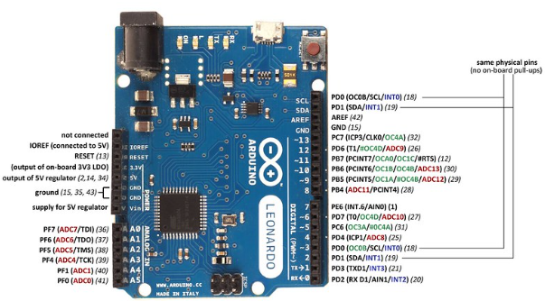

📟 Arduino Leonardo - Pinout Completo
Diagrama de distribución de pines y especificaciones técnicas del Arduino Leonardo
Diagrama de Pines

Especificaciones Técnicas
Microcontrolador
- Chip: ATmega32u4
- Voltaje de operación: 5V
- Voltaje de entrada (recomendado): 7-12V
- Voltaje de entrada (límite): 6-20V
- USB: Nativo (integrado en el chip)
Entradas/Salidas Digitales
- Pines I/O digitales: 20
- Pines PWM: 7 (D3, D5, D6, D9, D10, D11, D13)
- Corriente máxima por pin I/O: 40 mA
- Corriente máxima pin 3.3V: 50 mA
Entradas Analógicas
- Pines analógicos: 12 (A0-A5, A6-A11)
- Resolución ADC: 10 bits (0-1023)
- Voltaje de referencia: 5V (por defecto)
Memoria
- Flash Memory: 32 KB (4 KB usado por bootloader)
- SRAM: 2.5 KB
- EEPROM: 1 KB
Comunicación
- UART: 1 (pines 0 RX, 1 TX - solo hardware)
- SPI: Sí (header ICSP)
- I2C/TWI: Sí (pines 2 SDA, 3 SCL)
- USB HID: Nativo (Teclado, Mouse, Joystick)
Características Especiales
- Frecuencia de reloj: 16 MHz
- LED integrado: Pin 13
- Conexión USB: Micro-B
- USB HID: Puede actuar como teclado, mouse o joystick
- Comunicación serial: Separada del USB (no comparten pines)
Tabla de Pines Detallada
| Pin | Función Principal | Funciones Alternativas | Notas |
|---|---|---|---|
| D0 | I/O Digital | RX1 (UART) | Serial1 recepción |
| D1 | I/O Digital | TX1 (UART) | Serial1 transmisión |
| D2 | I/O Digital | SDA (I2C), INT2 | Línea de datos I2C |
| D3 | I/O Digital | PWM, SCL (I2C), INT0 | Línea de reloj I2C |
| D4 | I/O Digital | A6 | También entrada analógica |
| D5 | I/O Digital | PWM | Salida PWM disponible |
| D6 | I/O Digital | PWM, A7 | PWM + entrada analógica |
| D7 | I/O Digital | INT6 | Interrupción externa |
| D8 | I/O Digital | A8 | También entrada analógica |
| D9 | I/O Digital | PWM, A9 | PWM + entrada analógica |
| D10 | I/O Digital | PWM, A10 | PWM + entrada analógica |
| D11 | I/O Digital | PWM | Salida PWM disponible |
| D12 | I/O Digital | A11 | También entrada analógica |
| D13 | I/O Digital | PWM, LED | LED integrado conectado |
| A0-A5 | Entrada Analógica | I/O Digital | También pines digitales D18-D23 |
🎮 Característica USB HID
- Teclado: Puede enviar pulsaciones de teclas al PC
- Mouse: Puede controlar el cursor y botones del mouse
- Joystick: Puede emular un gamepad/joystick
- MIDI: Puede funcionar como dispositivo MIDI nativo
- Ideal para interfaces de usuario personalizadas
⚠️ Diferencias Importantes
- No hay Serial USB: El puerto serial está en D0/D1, no en USB
- Reset automático: No se resetea al abrir monitor serial
- 12 entradas analógicas: Más que Uno o Nano (A0-A11)
- I2C diferente: SDA en D2, SCL en D3 (no A4/A5)
- Bootloader USB: Tarda más en iniciar que otros Arduinos
💡 Casos de Uso Ideales
- Dispositivos HID personalizados (teclados, mice)
- Controladores MIDI para música
- Interfaces de juego (joysticks, pedales)
- Automatización de escritorio
- Proyectos que requieren múltiples entradas analógicas